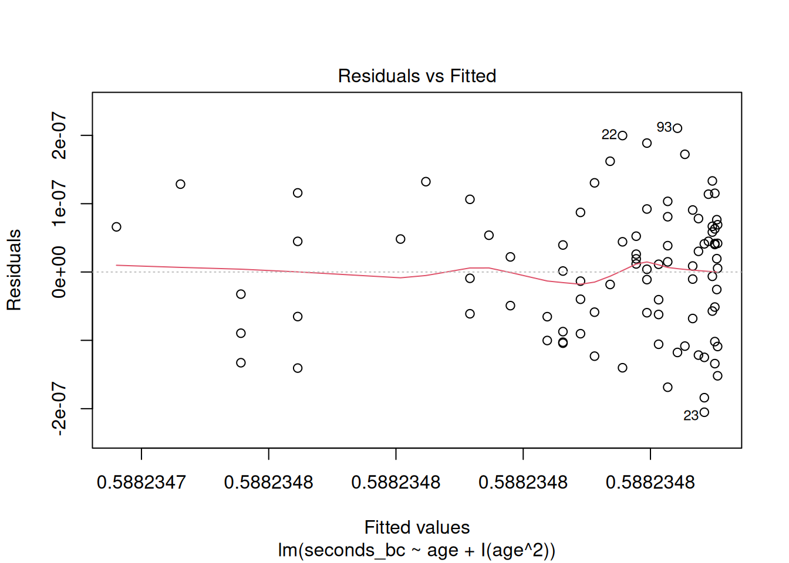
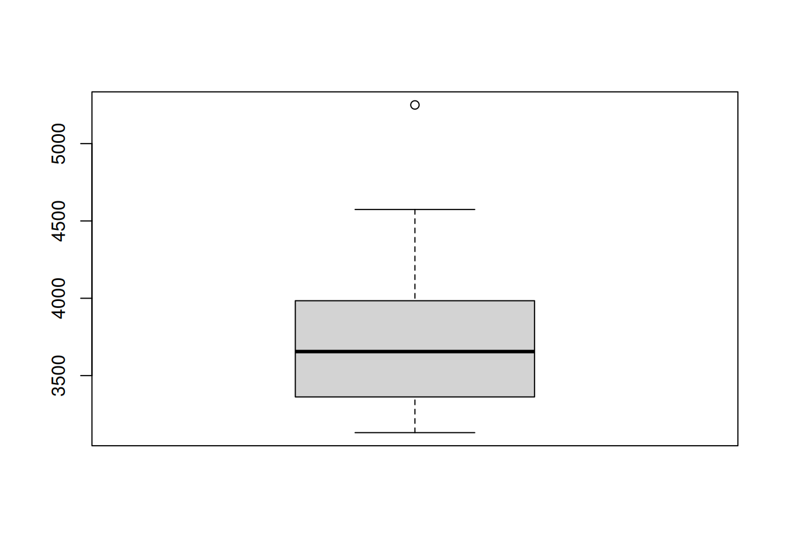
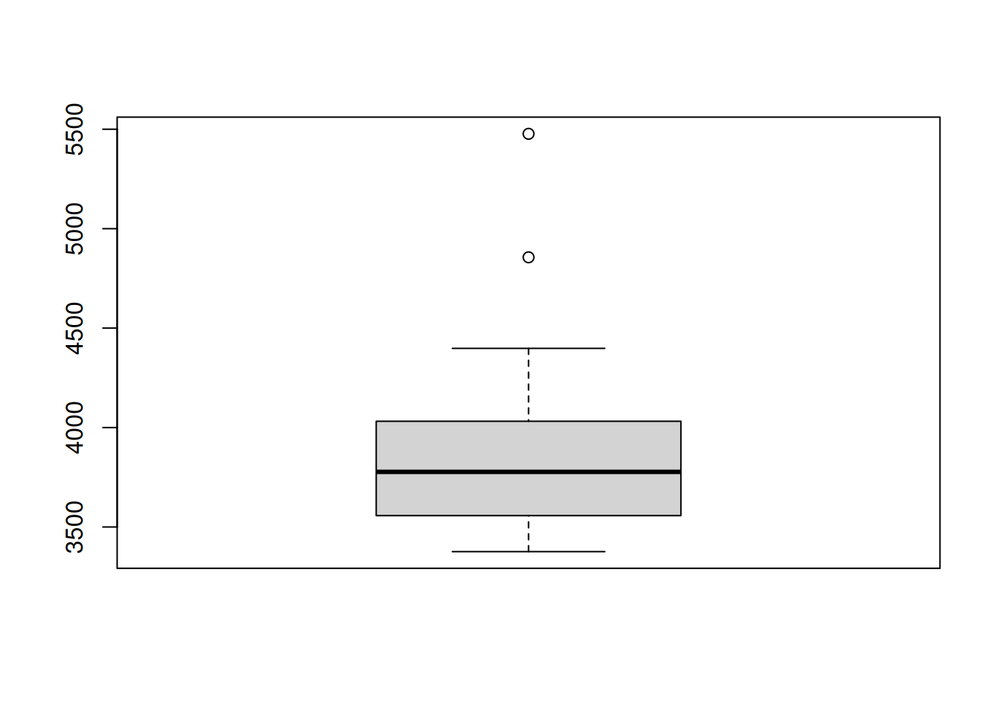

"https://www.magadlal.com/d/datasets/race.csv" |>
read.csv(skip = 1) ->
raceУнадаг дугуйчдын амжилт ба насны хамаарал
Морь хурдан уу, дугуй хурдан уу тэмцээний дүн дээрх өгөгдлийн шинжилгээ
1 Өгөгдөл
Унадаг дугуйчдын амжилт наснаас хамаардаг уу гэсэн асуултад хариулахын тулд 2024 оны 5 сарын 18 өдөр Монголын дугуйн холбоо, Монгол наадам цогцолбор болон Номадик дугуйн клуб хамтран зохиосон Морь хурдан уу дугуй хурдан уу тэмцээнийн дүнг авч үзье. Өөрөөр хэлбэл тус асуултад өгөгдлийн шинжилгээгээр хариулна. Өгөгдлийг Монголын дугуйн холбооны хуучин Фейсбүүк пейж [1] дээрх мэдээ дэх зургуудаас хиймэл оюуны OCR багажийн тусламжтай гарган авсан.
knitr::include_graphics(c("data/1.jpg", "data/2.jpg", "data/3.jpg"))


Ийнхүү бэлдсэн өгөгдлийг CSV форматтай файл болгоод www.magadlal.com веб сайт [2] дээр хадгалсан. Өгөгдлийн шинжилгээг R програмын 4.5.2 хувилбар [3] дээр хийв.
1.1 Өгөгдөл ачаалах
Ачаалсан өгөгдлийн 5 мөрийг санамсаргүй сонгоод хэвлэж харуулав.
set.seed(0)
race[sort(sample.int(n = nrow(race), size = 5)),] |> print() Байр Овог.нэр Нас Харьяа.байгууллага...Клуб Хувийн.дугаар Амжилт
1 1 Б.Батбаяр 20 Мөнгөн Хэгээс 239 00:52:11
14 14 Ч.Анхбаяр 21 Darkhan road team 217 01:03:12
34 12 У.Одбаяр 38 УДА 311 01:00:32
39 17 Д.Гэрэлт-Од 38 Хувиараа 319 01:04:18
68 3 Г.Махгал 42 УДА 408 00:56:571.2 Өгөгдлийг шинжилгээнд бэлдэх
Хувьсагчдыг дуудах баганын нэрс зохимжгүй байгаа тул багануудын нэрийг солив.
colnames(race) <- c("place", "name", "age", "club", "number", "time")Түүнчлэн тамирчдын амжилтыг илэрхийлэх хувьсагчийн утга 00:52:11 буюу HH:MM:SS форматтай character төрлийнх байгааг time төрөл рүү хувиргана. Улмаар тус хувьсагчийн утгуудыг хамгийн түрүүнд тэмцээний барианд орсон тамирчнаас тухайн тамирчин хэдэн секундын дараа барианд орсоныг секундээр илэрхийлдэг болгов. Тус шинэ хувьсагчийг seconds гэж нэрлэсэн.
race$seconds <- as.integer(
difftime(
as.POSIXct(race$time, format = "%H:%M:%S"),
as.POSIXct("00:00:00", format = "%H:%M:%S"),
units = "secs"
)
)2 Тамирчдын амжилт ба нас хоорондын хамаарал
Тэмцээний дүн мэдээнээс зөвхөн эрэгтэйчүүдийн сонирхогч ангиллын тамирчдын 17-29, 30-39 болон 40-49 насыг л авсан. Өөрөөр хэлбэл seconds хувьсагч нь хүйс ба мэргэжлийн тамирчид зэрэг хүчин зүйлийн нөлөөнөөс ангид юм. Өөрөөр хэлбэл тус хувьсагч дээр зөвхөн насны нөлөө л байж болно.
seconds болон age хувьсагчдын хамаарлыг цэгэн диаграммаар дүрслэн харуулав.
plot(x = race$age, y = race$seconds, xlab = "Age", ylab = "Time")
Хоёр хувьсагчийн хамаарлыг шугаман хэлбэртэй гэмээр тул хамаарлыг статистикийн шугаман загвараар илэрхийлэгдэнэ гэж таамаглана. Өөрөөр хэлбэл шугаман регрессийн шинжилгээ хийнэ.
2.1 Регрессийн шинжилгээ
Одоо дээр дурдсанчлан шугаман регрессийн шинжилгээ [4] хийнэ. Ингээд seconds болон age хувьсагчдын хамаарлыг \[\text{seconds}=a+b\cdot\text{age}\] шугаман загвараар илэрхийлэгдэнэ гэж таамаглана.
Эхлээд загварын парамтрүүдийг үнэлнэ.
fit <- lm(formula = seconds ~ age, data = race)Шугаман загварын хувьд үлдэгдлийн дисперс тогтмол, үлдэгдэл хэвийн тархалттай зэрэг таамаглал биелнэ гэж тооцдог. Эдгээр таамаглал хэр үнэмшилтэй байгааг харахаар загварын оношлогооны диаграммуудыг байгуулна. Бас таамаглалуудыг зохих шинжүүрээр шалгана.
Таамаглалуудыг 0.05 ач холбогдлын түвшинд шалгана.
Сая шугаман загварыг ашиглах үед тодорхой таамаглалуудыг биелнэ гэсэн шаардлага тавьдаг гэсэн. Мөн түүнчлэн өөр нэг шаардлага тавьдаг. Энэ бол түүврийн элементүүд хамааралгүй гэдэг шаардлага юм. Хэрэв хамааралтай бол өгөгдлийг өөр загвараар шинжилдэг. Манай тохиолдолд түүврийн элементүүд нь тэмцээнд оролцогч тамирчид юм. Тамирчдын амжилт буюу жийлтийн эрчим нь өөр хоорондоо хамааралгүй гэсэн таамаглал биелнэ гэж үзэх үндэстэй. Учир нь Морь хурдан уу, дугуй хурдан уу уралдааны үеэр тамирчид “толгой толгойгоо даан” жийцгээдэг. Өөрөөр хэлбэл баг багаараа хамтарч салхиа авах гэх мэтчилэн арга хэрэглэдэггүй. Миний ажиглалтаар ийм арга хэрэглэхээр оролдсон нь замын бартаанд онхолдох зэргээр бүтэлгүйтдэг юм билээ. Иймдээ ч тамирчид тус тэмцээнд оролцохдоо тийнхүү толгой толгойгоо даан хамааралгүйгээр уралддаг биз ээ. Дүгнэвээс, түүврийн элементүүд хамааралгүй буюу шугаман загвар дээрх уг шаардлага биелнэ хэмээн үзнэ.
Эхлээд үлдэгдлийн дисперс тогтмол гэсэн таамаглалыг авч үзье. Residuals vs Fitted диаграмм байгуулж харвал ерөнхийдөө хонгил хэлбэр л ажиглагдана. Диаграммыг дараах тушаалаар байгуулна.
plot(fit, which = 1)
Бас Scale-Location диаграмм ашиглаж болно.
plot(fit, which = 3)
Диаграмм харж “нүдээрээ” дүгнэлт гаргах нь өрөөсгөл юм. Иймээс үлдэгдлийн дисперс тогтмол эсэхийг Бройш-Паганы шинжүүрээр [5] шалгана. Шинжүүрийг хэрэглэхдээ lmtest багц [6] ашиглав.
lmtest::bptest(fit)
studentized Breusch-Pagan test
data: fit
BP = 0.069525, df = 1, p-value = 0.792Дээрх үр дүн нь тус шинжүүр тэг таамаглалыг 0.05 ач холбогдлын түвшинд үл няцааж буйг илтгэнэ.
Одоо шугаман загварын үлдэгдэл хэвийн тархалттай гэдэг таамаглалыг шалгана. Тархалт хэвийн эсэхийг Q-Q диаграммаас ажиглаж болно.
plot(fit, which = 2)
Диаграммыг харвал хэвийн тархалттай гэмээргүй төрх ажиглагдана. Гэсэн хэдий ч уг таамаглалыг зохих шинжүүрээр нь шалгана. Ингээд загварын үлдэгдлийг олж улмаар үлдэгдэл хэвийн тархалттай гэсэн тэг таамаглалыг Шафиро-Уилкийн шинжүүрээр [7] шалгана.
fit |> residuals() |> shapiro.test()
Shapiro-Wilk normality test
data: residuals(fit)
W = 0.83388, p-value = 6.923e-09\(p\text{-утга}=6.9228853\times 10^{-9}<0.05\) гэж гарсан нь бидний авч үзэж буй шугаман загварын үлдэгдэл хэвийн тархалттай гэсэн тэг таамаглалыг тус шинжүүр 0.05 ач холбогдлын түвшинд няцааж буйг илтгэнэ. Энэ бол нэг талаас өгөгдөл дотор, шугаман загвартай харшлах онцгой утгууд байна гэсэн үг юм. Мөн нөгөө талаас шугаман бус хамааралтай хувьсагчид дээр шугаман загвар хэрэглэсэн байж болно. Гэхдээ дээрх оношлогооны диаграммуудыг ажиглавал өгөгдлийг агуулж буй датафреймын 64, 65 болон 94 гэсэн дугаартай мөрүүд дэх утгууд хэт хазайлттай үлдэгдэл ба хэвийн тархалтаас гажих явдлыг нөхцөлдүүлж буй нь харагдана. Харин шугаман бус хамаарал бий гэдэг нь саяын дүгнэлтээс үнэмшил муутай. Иймээс тэдгээр гурван утгыг өгөгдлөөс зайлуулна.
race <- race[-c(64, 65, 94),]Ийнхүү өгөгдөлд цэвэрлэгээ хийсэн тул шугаман загварыг ахин ажиллуулна. Түүнчлэн шугаман бус хамаарал гэдэг хүчин зүйлийг ч орхиж болохгүй. Иймээс 64, 65 болон 94 дугаартай мөрүүдийг зайлуулсан өгөгдөл дээр загвараа ахин үнэлээд улмаар Бокс-Коксын хувиргалт [8] хийнэ. Тус хувиргалт нь үлдэгдлийг хэвийн тархалттай болгоход ач холбогдолтой. Эцэст нь ингэж хувиргасны дараах өгөгдөл дээр шугаман загварыг ахин ажиллуулаад, гарсан үр дүнг нь нарийвчлан шинжилнэ.
2.2 Хоёр дахь шатны регрессийн шинжилгээ
Энэ удаад цэвэрлэсэн өгөгдөл дээр регрессийн шинжилгээ хийнэ.
fit <- lm(formula = seconds ~ age, data = race)Үлдэгдлийн тархалтыг хэвийн болгох зорилгоор Бокс-Коксын хувиргалт хийнэ. Мөн энэ нь үлдэгдлийн дисперсийн тогтмол бус байдлыг засахад ч ач холбогдолтой. Хувиргалтыг MASS багц [9] ашиглан гүйцэтгэв.
bc <- MASS::boxcox(fit, plotit = FALSE)
lambda <- bc$x[which.max(bc$y)]
bc_transform <- \(y, lambda) {
if (abs(lambda) < 1e-6) {
log(y)
} else {
(y^lambda - 1) / lambda
}
}
race$seconds_bc <- bc_transform(race$seconds, lambda)Хувиргалтаар үүссэн шинэ хувьсагчийг seconds_bc гэж нэрлэв.
fit <- lm(formula = seconds_bc ~ age, data = race)Одоо нэн тэргүүнд өмнө зөрчигдөж байсан шаардлага буюу загварын үлдэгдэл хэвийн тархалттай гэсэн таамаглалыг шалгана.
fit |> residuals() |> shapiro.test()
Shapiro-Wilk normality test
data: residuals(fit)
W = 0.97886, p-value = 0.1454\(p\text{-утга}\) 0.05 ач холбогдлын түвшингээс их гарсан буюу үлдэгдэл хэвийн тархалттай гэсэн тэг таамаглалыг үл няцаана. Түүнчлэн үлдэгдлийн дисперс тогтмол гэсэн тэг таамаглалыг шалгахад \(p\text{-утга}=0.2494367\) гэж олдсон.
Эцэст нь хувьсагчдын хамаарал шугаман хэлбэртэй байгаа эсэхийг шугаман загварын оношлогооны диаграммын тусламжтай ажиглая. Үүний тулд Residuals vs Fitted диаграмм байгуулна.
plot(fit, which = 1)
Хэрэв хамаарал үнэхээр шугаман бол диаграмм дээрх улаан шугам бараг тэгш байх ёстой. Гэвч хугарсан мэт хэлбэр ажиглагдаж буй тул хамаарлыг шугаман биш гэж дүгнэнэ. Улмаар нэг л хугарал буй тул загварт квадрат эрэмбийн \(\text{нас}^2\) тайлбарлах хувьсагч нэмнэ.
fit <- lm(formula = seconds_bc ~ age + I(age^2), data = race)Шинээр зохиосон хоёр дугаар эрэмбийн шугаман загварын хувьд Residuals vs Fitted диаграмм ахин байгуулъя.
plot(fit, which = 1)
Одоо улаан шугам V, U эсвэл S гэх мэт тодорхой зүй тогтолгүй, зүгээр л тэгийн орчим хэлбэлзжээ. Иймд квадрат эрэмбийн загвар хангалттай. Гэхдээ дээр дурдсанчлан диаграммаас дүгнэлт гаргах нь өрөөсгөл тул үүнийг зохих шинжүүрээр шалгана. Ингээд загвар шугаман гэсэн тэг таамаглалыг Rainbow шинжүүр [10] ашиглаж шалгана. Шинжүүрийг хэрэглэхдээ lmtest багц ашиглав.
lmtest::raintest(fit)
Rainbow test
data: fit
Rain = 1.1762, df1 = 46, df2 = 42, p-value = 0.2984\(p\text{-утга}\) 0.05 ач холбогдлын түвшингээс их гарсан нь шугаман загварын үлдэгдлийн хэлбэлзэл санамсаргүй гэсэн тэг таамаглалыг тус шинжүүр үл няцааж буйг илтгэнэ.
Мөн хоёр дугаар эрэмбийн шугаман загвар шинээр авч үзэж буй тул уг загварын үлдэгдлийн дисперс тогтмол эсэхийг ч шалгах хэрэгтэй.
lmtest::bptest(fit)
studentized Breusch-Pagan test
data: fit
BP = 1.3871, df = 2, p-value = 0.4998Гарсан үр дүнг харвал үлдэгдлийн дисперс тогтмол гэсэн тэг таамаглал үл няцаагджээ.
Түүнчлэн шинэ загварын хувьд түүний үлдэгдэл хэвийн тархалттай гэсэн таамаглал үнэн эсэхийг бас л шалгах хэрэгтэй.
fit |> residuals() |> shapiro.test()
Shapiro-Wilk normality test
data: residuals(fit)
W = 0.98606, p-value = 0.4456Дээрх үр дүн хоёр дугаар эрэмбийн шугаман загварын үлдэгдэл хэвийн тархалттай гэсэн тэг таамаглалыг Шафиро-Уилкийн шинжүүр үл няцааж буйг илтгэнэ.
Ийнхүү урьдчилсан таамаглалууд үл зөрчигдөж буйг олж тогтоосноор \[\text{seconds\_bc}=a+b\cdot\text{age}+c\cdot\text{age}^2\] хоёр дугаар эрэмбийн шугаман загварыг найдвартай гэж үзэх үндэслэлтэй боллоо. Иймээс уг загварт тулгуурлан “Унадаг дугуйчдын амжилт наснаас хамаардаг уу?” гэсэн асуултад эцэслэн хариулна.
Унадаг дугуйчдын амжилт наснаас хамаардаг уу гэсэн асуулт нь дээрх хоёр дугаар эрэмбийн шугаман загвар статистик ач холбогдолтой юу гэсэн асуулттай эквивалент юм. Ийм асуултад F шинжүүрийн тусламжтай хариулт өгнө. F статистикийг загварын дүгнэгч статистикууд дундаас харж болно.
summary(fit)
Call:
lm(formula = seconds_bc ~ age + I(age^2), data = race)
Residuals:
Min 1Q Median 3Q Max
-2.052e-07 -6.670e-08 8.778e-09 6.460e-08 2.104e-07
Coefficients:
Estimate Std. Error t value Pr(>|t|)
(Intercept) 5.882e-01 1.647e-07 3.572e+06 <2e-16 ***
age 2.054e-08 9.951e-09 2.064e+00 0.0420 *
I(age^2) -2.831e-10 1.455e-10 -1.945e+00 0.0549 .
---
Signif. codes: 0 '***' 0.001 '**' 0.01 '*' 0.05 '.' 0.1 ' ' 1
Residual standard error: 9.544e-08 on 88 degrees of freedom
Multiple R-squared: 0.05259, Adjusted R-squared: 0.03106
F-statistic: 2.442 on 2 and 88 DF, p-value: 0.09283F шинжүүрийн \(p\text{-утга}\) 0.05 ач холбогдлын түвшингээс их байгаа нь “унадаг дугуйчдын амжилт наснаас хамаардаг” гэсэн таамаглалыг статистик ач холбогдолтойгоор баталж чадахгүй байна гэсэн үг юм. Цаашилбал Adjusted R-squared 0.0310564 нь загвар (манай тохиолдолд нас) дугуйчдын амжилтын хэлбэлзлийн ердөө 3.1%-ийг л тайлбарлаж байна гэсэн үг. Үлдсэн 97% шахуу нь бэлтгэл сургуулилт, унадаг дугуйны чанар, туршлага гэх мэт наснаас өөр хүчин зүйлээс хамаарч байна.
Коэффициентүүдийн шинжилгээ буюу t шинжүүрийн үр дүнгээс насны дан болон квадрат эрэмбийн хувьсагчид нөлөөгүй болох нь харагдана. Иймд насыг тамирчдын амжилтыг тайлбарлахад ач холбогдолгүй гэж дүгнэнэ.
Ийнхүү тамирчдын амжилт наснаас хамаардаг гэсэн алтернатив таамаглал статистик ач холбогдолтойгоор батлагдахгүй байна.
2.3 Дисперсийн шинжилгээ
Тус тэмцээнд оролцсон сонирхогч ангиллын эрэгтэй тамирчдыг насаар нь 17-29, 30-39 болон 40-49 гэсэн гурван категороор ангилж уралдуулсан. Өдгөө ч уг ангилал өөрчлөгдөөгүй байна. Одоо нэмэлтээр тус насны ангиллын хувьд тамирчдын амжилтын статистик ач холбогдол бүхий ялгаа байна уу гэдгийг шинжилнэ.
Насны гурван категор дахь тамирчдын амжилт ижил гэсэн таамаглалыг дисперсийн шинжилгээний [11] тусламжтай шалгаж болно. Үүний тулд эхлээд манай өгөгдөл дисперсийн шинжилгээний шаардлага хангах эсэхийг нягтална.
Насаар ангилсан гурван бүлэг бүрээрх тамирчдын амжилт буюу seconds хувьсагч хэвийн тархалттай. Насны бүлгүүд дэх тамирчдын амжилтын дисперс ижил.
Эхний таамаглалыг дараах байдлаар шалгана.
subset("x" = race, "subset" = age < 30, select = seconds, "drop" = TRUE) |>
shapiro.test()
Shapiro-Wilk normality test
data: subset(x = race, subset = age < 30, select = seconds, drop = TRUE)
W = 0.88401, p-value = 0.01442subset("x" = race, "subset" = age >=30 & age < 40, select = seconds, "drop" = TRUE) |>
shapiro.test()
Shapiro-Wilk normality test
data: subset(x = race, subset = age >= 30 & age < 40, select = seconds, drop = TRUE)
W = 0.97034, p-value = 0.3538subset("x" = race, "subset" = age >=40, select = seconds, "drop" = TRUE) |>
shapiro.test()
Shapiro-Wilk normality test
data: subset(x = race, subset = age >= 40, select = seconds, drop = TRUE)
W = 0.84687, p-value = 0.000809Гурван бүлэг тус бүртэй харгалзах шинжүүрийн \(p\text{-value}\) харгалзан 0.01442, 0.3538 болон 0.000809 гэж гарсан. Эдгээрээс 17-29 болон 40-49 насны бүлэгт хамаатай \(p\text{-утга}\) 0.05 ач холбогдлын түвшингээс байгаа нь тэдгээр бүлгийн хувьд тамирчдын амжилтыг илэрхийлэх seconds хувьсагч хэвийн бус тархалттай гэдгийг илтгэж буй явдал юм. Иймээс тэдгээр бүлэг дэх тархалт яагаад хэвийн биш байгааг нягтална. Ийм нөхцөл байдлын шалтгаан нь онцгой утга байх нь түгээмэл. Ингээд онцгой утга илрүүлэхийн тулд хайрцган диаграмм байгуулна.
Эхлээд 17-29 бүлгийг авч үзнэ.
subset(x = race, subset = age < 30, select = seconds, drop = TRUE) |>
boxplot() ->
bp
cat("Outliers:", bp$out)Outliers: 5250
Ингээд 5250 секунд гэсэн 1 ширхэг онцгой утга илрүүлэв. Энэ нь 1 цаг 27 минут 30 секунд гэсэн үг. Одоо тус утгыг оролцуулалгүйгээр таамаглал шалгана.
subset(
x = race,
subset = age < 30 & seconds < min(bp$out),
select = seconds,
drop = TRUE
) |>
shapiro.test()
Shapiro-Wilk normality test
data: subset(x = race, subset = age < 30 & seconds < min(bp$out), select = seconds, drop = TRUE)
W = 0.93497, p-value = 0.1731\(p\text{-утга}\) нь 0.05 ач холбогдлын түвшингээс багагүй болсоноор 17-29 насны тамирчдын амжилт хэвийн тархалттай биш гэж батлах үндэслэл үгүй боллоо. Тэгэхээр тархалтыг хэвийн бус болгож буй тус онцгой утгыг өгөгдлөөс зайлуулна.
race <- race[!{race$age < 30 & race$seconds >= min(bp$out)},]Одоо 40-49 бүлгийг авч үзнэ.
subset(x = race, subset = age >= 40, select = seconds, drop = TRUE) |>
boxplot() ->
bp
cat("Outliers:", bp$out)Outliers: 4856 5477
Ингээд 4856, 5477 секунд гэсэн 2 ширхэг онцгой утга илрүүлэв. Энэ нь 1 цаг 20 минут 56 секунд ба 1 цаг 31 минут 17 секунд гэсэн үг. Одоо эдгээр утгыг оролцуулалгүйгээр таамаглал шалгана.
subset(
x = race,
subset = age >= 40 & seconds < min(bp$out),
select = seconds,
drop = TRUE
) |>
shapiro.test()
Shapiro-Wilk normality test
data: subset(x = race, subset = age >= 40 & seconds < min(bp$out), select = seconds, drop = TRUE)
W = 0.93098, p-value = 0.08178\(p\text{-утга}\) нь 0.05 ач холбогдлын түвшингээс багагүй болсоноор 40-49 насны тамирчдын амжилт хэвийн тархалттай биш гэж батлах үндэслэл үгүй боллоо. Тэгэхээр тархалтыг хэвийн бус болгож буй тэдгээр онцгой утгуудыг өгөгдлөөс зайлуулна.
race <- race[!{race$age >= 40 & race$seconds >= min(bp$out)},]Одоо насны бүлгүүд дэх тамирчдын амжилтын дисперс ижил гэсэн таамаглалыг шалгана. Ийм таамаглалыг Бартлетийн шинжүүрээр [12] шалгана. Үүний тулд насны бүлгийг илэрхийлэх хувьсагч хэрэгтэй.
race$age_group <- cut(
x = race$age,
breaks = c(17,30,40,50),
labels = c("20", "30", "40"),
include.lowest = TRUE, right = TRUE, ordered_result = TRUE
)
bartlett.test(formula = seconds ~ age_group, data = race)
Bartlett test of homogeneity of variances
data: seconds by age_group
Bartlett's K-squared = 5.1336, df = 2, p-value = 0.07678Дээрх үр дүн нь гурван бүлгийн дисперс тэнцүү гэдэг тэг таамаглалыг 0.05 ач холбогдлын түвшинд үл няцааж буйг илтгэнэ.
Ийнхүү дисперсийн шинжилгээний шаардлагыг манай өгөгдөл хангахгүй гэх статистик үндэслэл алга байгаа тул тус шинжилгээг хийж болно.
fit <- aov(formula = seconds ~ age_group, data = race)
summary(fit) Df Sum Sq Mean Sq F value Pr(>F)
age_group 2 799930 399965 2.113 0.127
Residuals 85 16091830 189316 \(p\text{-утга}=0.1272179>0.05\) байгаа нь насны гурван бүлэг ялгаатай гэдэг алтернатив таамаглал үл батлагдаж буйг илтгэнэ. Өөрөөр хэлбэл тамирчдын амжилт наснаас хамаардаг гэх статистик үндэслэл гарахгүй байна.
Ийнхүү янз бүрээр шинжилж үзсэний эцэст 17-50 насны унадаг дугуйн тамирчдын амжилт буюу гараанаас бариа хүртэл жийхдээ зарцуулах хугацаа наснаас хамаардаггүй гэх үндэслэл байна гэсэн дүгнэлтэд хүрлээ.
Эцэст нь тэмдэглэхэд нэг жил Монголын дугуйн холбоо (МДХ) унадаг дугуйчдыг гурван категорт ангилаад уралдуулж байж билээ. Тухайн үед МДХ-ны ЕНБД асан З.Наран хэлэхдээ олон улсад тамирчдыг насаар бус харин чансаагаар нь эрэмбэлэн ангилж уралдуулдаг жишгийн дагуу тийнхүү тамирчдыг насны бус ангилалаар хуваалаа гэсэн. Гэвч буцаад насаар ангилах болсон ба өдгөө ч насаар ангилах нь хэвээрээ л байна. Дээрх өгөгдлийн шинжилгээний үр дүнг харвал Наран ахын зөв байсан бололтой.
3 Нэмэлт шинжилгээ
3.1 Унадаг дугуйчдын жийлтийн эрчим хэвийн тархалттай эсэх
Цааш үргэлжлүүлэн seconds хувьсагч нормал тархалттай эсэхийг шалгав.
race$seconds |> shapiro.test()
Shapiro-Wilk normality test
data: race$seconds
W = 0.96514, p-value = 0.01809Дээрх үр дүн бол хэвийн тархалттай гэсэн тэг таамаглал няцаагдаж буйг илтгэнэ. Ийнхүү няцаагдсан нь 5172 секунд буюу 1 цаг 26 минут 12 секунд гэсэн онцгой утгаас шалтгаалсан болохыг нэмэлт шинжилгээний явцад харагдана.
race$seconds |> boxplot() -> bp
bp$out |> print()[1] 5172subset(x = race, subset = seconds == min(bp$out))$time |> print()[1] "01:26:12"
Дээрх онцгой утгыг оролцуулахгүй бол хувьсагч хэвийн тархалттай гэсэн таамаглал 0.05 ач холбогдлын түвшинд үл няцаагдана. Энэ үр дүн дараах байдлаар гарсан.
subset(
x = race,
subset = seconds < min(bp$out),
select = seconds,
drop = TRUE
) |>
shapiro.test()
Shapiro-Wilk normality test
data: subset(x = race, subset = seconds < min(bp$out), select = seconds, drop = TRUE)
W = 0.97206, p-value = 0.05642Ингээд дээрх үр дүнд үндэслэн унадаг дугуйчдын жийлтийн эрчим хэвийн тархалттай гэж үзнэ.
3.2 Жийлтийн эрчмийн вариацын цувааны минимал ба максимал элементүүдийн корреляц
Унадаг дугуйчдын жийлтийн эрчмийг өөр хоорондоо хамааралгүй гэж тооцсон. Жийлтийн эрчим нь бэлтгэл сургуулилт, дадлага туршлага, унадаг дугуйн чанар зэргээс гадна хувь хүний бие физиологи хийгээд бусад онцлог ялгаа гэх мэт олон тусдаа хүчин зүйлийн нийлэмж тул ийм хамааралгүйн чанар үнэхээр хүчинтэй байж болно. Гэхдээ жийлтийн эрчмийг эрэмбэлэн жагсаах буюу вариацын цуваа байдлаар авч үзвэл хамааралтай болно.
\(n\) унадаг дугуйчин байг. Унадаг дугуйчдын жийлтийн эрчмийг илэрхийлэх санамсаргүй хувьсагчийг \(X\) гэж тэмдэглэе. Тэгвэл тэдгээр дугуйчдын жийлтийн эрчмийг харгалзан \(X_1,X_2,\ldots,X_n\) гэж тэмдэглэнэ. Дээр дурдсанчлан эдгээр хувьсагчид хамааралгүй бас хэвийн тархалттай. Харин эдгээрийг эрэмбэлэн жагсаахад үүсэх вариацын цувааны хувьд нөхцөл байдал өөр болно. Вариацын цувааны \(i\) дүгээр элемент буюу \(i\) дүгээр эрэмбийн статистикийг \(X_{(i)}\) гэж тэмдэглэнэ. Ийнхүү \(X_1,X_2,\ldots,X_n\) түүврийн элементүүдийг эрэмбэлсэнээр тэдгээр нь өөр хоорондоо хамааралтай болдог. Өөрөөр хэлбэл \(X_i\) ба \(X_j\) хоёр хамааралгүй ч эрэмбэлсэний дараах \(X_{(i)}\) ба \(X_{(j)}\) хоёр хамааралтай. Энэ бол тэмцээний тэргүүн байр эзэлсэн тамирчин ба баян ходоод болсон тамирчин хоёрын жийлтийн эрчим хамааралтай гэсэн үг юм. Нэгэнт эдгээр нь хамааралтай юм бол хамаарал нь хэр хүчтэй вэ гэсэн асуулт гарна. Ингээд \(X_{(1)}\) ба \(X_{(n)}\) буюу цувааны хамгийн эхний ба хамгийн сүүлийн элементүүдийн хоорондох корреляцийг олно. Уг корреляцийг илэрхийлэх томъёо төдийгүй томъёоны дагуух тооцоолол нарийн түвэгтэй тул тооцох бодох математикийн арга техник хэрэглэлээ. Эрэмбийн статистикийн тархалт гэх мэтчилэн шаардлагатай томъёонуудыг МУИС-ийн Статистик хөтөлбөрийн Математик статистик хичээлийн сурах бичиг [11] дээрээс авсан. Тооцооллыг R програм дээр хийв.
n_range <- 2:16
results <- data.frame(n = n_range, rho = NA)
cov_order_stats <- function(n, mu = 0, sigma = 1) {
# стандарт хэвийн тархалтын нягтын функц
phi <- function(x) dnorm(x)
# стандарт хэвийн тархалтын хуримтлагдах тархалтын функц
Phi <- function(x) pnorm(x)
# Z_(1)
f_min <- function(z){
n * {1 - Phi(z)} ** {n-1} * phi(z)
}
Ez1 <- integrate(function(z) z * f_min(z), lower = -Inf, upper = Inf)$value
Ez1_sq <- integrate(function(z) z ** 2 * f_min(z), lower = -Inf, upper = Inf)$value
Var_z1 <- Ez1_sq - Ez1 ** 2
# Z_(n)
Ez_n <- - Ez1 # тархалт нь тэгш хэмтэй учраас
Var_zn <- Var_z1
# Z_(1) ба Z_(n) хоёрын хамтын нягт
joint_density <- function(u, v) {
n * {n - 1} * phi(u) * phi(v) * {Phi(v) - Phi(u)} ** {n-2}
}
# Z_(1) * Z_(n) үржвэрийн дундаж олоход шаардлагатай интегралчлах функц
integrand_outer_scalar <- function(u) {
inner <- function(v) {
u * v * joint_density(u, v)
}
integrate(inner, lower = u, upper = Inf)$value
}
# integrate-д зориулж векторжуулах
integrand_outer <- Vectorize(integrand_outer_scalar)
# Z_(1) * Z_(n) үржвэрийн дундаж
Ez1zn <- integrate(integrand_outer, lower = -Inf, upper = Inf)$value
# Z_(1) ба Z_(n) хоёрын ковариац
Cov_z <- Ez1zn - Ez1 * Ez_n
# масштабын хувиргалт
Var1 <- sigma ** 2 * Var_z1
VarN <- sigma ** 2 * Var_zn
Cov12 <- sigma ** 2 * Cov_z
# ковариацийн матриц
Sigma <- matrix(
c(
Var1, Cov12,
Cov12, VarN
),
nrow = 2
)
return(list(
Var_X1 = Var1,
Var_Xn = VarN,
Cov = Cov12,
Cov_matrix = Sigma
))
}
for (i in seq_along(n_range)) {
n <- n_range[i]
# эрэмбийн статистикуудын дисперс ба ковариац
v <- cov_order_stats(n)
# корреляци: rho = Cov(X1, Xn) / sqrt(Var(X1) * Var(Xn))
# симметр чанараар Var(X1) = Var(Xn)
rho <- v$Cov / v$Var_X1
results$rho[i] <- rho
}
results$rho |> round(digits = 3) |> cat()0.467 0.295 0.213 0.166 0.135 0.114 0.099 0.087 0.078 0.07 0.064 0.059 0.054 0.05 0.047Ийнхүү \(n\geq2\) хэмжээтэй түүврийн хувьд \(X_{(1)}\) ба \(X_{(n)}\) эрэмбийн статистикуудын корреляцийн коэффициентын утгыг оллоо. Эдгээрээс тухайлбал 0.099 нь \(n=8\) унадаг дугуйчны жийлтийн эрчмээрээ хамгийн сайн ба муу хоёрын жийлтийн эрчмийн хамаарал (корреляцийн коэффициент) төдий хэмжээтэй гэдгийг илтгэнэ. Эдгээр корреляцийг цэг-шугаман диаграммаар дүрслэн харуулав.
results |> plot(
type = "b",
ylim = c(0, 0.5),
xlab = "n", ylab = "correlation",
col = c("black", "red")[{results$rho<0.1}+1]
)
abline(h = 0.1, col = "red")
text(x = 7, y = min(results$rho[results$rho >= 0.1]), labels = "7", pos = 3)
clip(x1 = 6, x2 = 8, y1 = 0, y2 = min(results$rho[results$rho >= 0.1]))
abline(v = 7)
Цувааны минимал ба максимал элементүүдийн корреляц түүврийн хэмжээ өсөх тусам буурна. Гэхдээ хэзээ ч абсолют тэг утгад хүрэхгүй. Тэгэхээр түүврийн хэмжээ хэд болоход хоёр эрэмбийн статистикийг хамааралгүй гэж тооцож болох вэ гэсэн асуулт гарна. Энэ бол корреляцийн босго утгын тухай асуулт юм. Тухайлбал статистикт өргөн ашигладаг Коэны санал болгосон шатлал дахь “маш сул” хамааралтай харгалзах доод босго 0.1 байдаг. 0.1 утгыг сул хамаарлын доод босго гэж заасан өөр шатлалууд ч байдаг. Тэгэхээр корреляцийн утга 0.1 тооноос бага болох үед вариацын цувааны минимал ба максимал элементүүд статистик хамааралгүй гэж тооцно. Тэгвэл үүнд харгалзах түүврийн хэмжээ \(n=7\) гэж олдоно. Энэ бол унадаг дугуйчдын тоо 8 байх үед цувааны толгойд яваа дугуйчны жийлтийн эрчим цувааны сүүлд яваа дугуйчинд нөлөөлөхгүй болно гэсэн үг юм. Нөгөө талд ийм үр дүн нь унадаг дугуйгаар хамтдаа яваа групп дугуйчдын тооны оновчтой максимал утгын тухай дүгнэлтэд хүргэнэ.
Дүгнэлт
- Унадаг дугуйн спортын тамирчдын амжилт наснаас хамаардаг гэсэн алтернатив таамаглал статистик ач холбогдолтойгоор батлагдахгүй байна.
- Эдүгээ хэрэгжиж буй насны ангилал болох 17-29, 30-39 болон 40-49 гурван бүлгийн хувьд тамирчдын амжилт ялгаатай гэх статистик үндэслэл алга байна.
- Унадаг дугуйчдын жийлтийн эрчим хэвийн тархалттай.
- Жийлтийн эрчмийн вариацын цувааны минимал ба максимал элементүүдийн корреляц нь түүврийн хэмжээ \(n>7\) үед маш сул хамаарлын босго 0.1 утгаас бага болно.
Ашигласан материал
[1]
Mongolian Cycling Federation, “Mongolian cycling federation facebook page.” 2014. Available: https://www.facebook.com/people/Mongolian-Cycling-Federation/100064467231837/
[2]
Г.Махгал, “Магадлал статистик веб сайт.” 2016. Available: https://www.magadlal.com
[3]
R Core Team, R: A language and environment for statistical computing. Vienna, Austria: R Foundation for Statistical Computing, 2025. Available: https://www.R-project.org/
[4]
G. James, D. Witten, T. Hastie, and R. Tibshirani, An introduction to statistical learning: With applications in r. Springer, 2021. Available: https://www.statlearning.com/
[5]
T. S. Breusch and A. R. Pagan, “A simple test for heteroscedasticity and random coefficient variation,” Econometrica, vol. 47, no. 5, pp. 1287–1294, 1979, Available: https://www.jstor.org/stable/1911995
[6]
A. Zeileis and T. Hothorn, “Diagnostic checking in regression relationships,” R News, vol. 2, no. 3, pp. 7–10, 2002, Available: https://CRAN.R-project.org/doc/Rnews/
[7]
S. S. Shapiro and M. B. Wilk, “An analysis of variance test for normality (complete samples),” Biometrika, vol. 52, no. 3/4, pp. 591–611, 1965, Available: https://www.jstor.org/stable/2333709
[8]
G. E. P. Box and D. R. Cox, “An analysis of transformations,” Journal of the Royal Statistical Society. Series B (Methodological), vol. 26, no. 2, pp. 211–252, 1964, Available: https://www.jstor.org/stable/2984418
[9]
W. N. Venables and B. D. Ripley, Modern applied statistics with s, Fourth. New York: Springer, 2002. Available: https://www.stats.ox.ac.uk/pub/MASS4/
[10]
J. M. Utts, “The rainbow test for lack of fit in regression,” Communications in Statistics - Theory and Methods, vol. 11, no. 24, pp. 2801–2815, 1982, doi: 10.1080/03610928208828423.
[11]
Б.Жамъяншарав, Математик статистик, Анхны хэвлэл. Улаанбаатар: МУИС, 2023.
[12]
M. S. Bartlett, “Properties of sufficiency and statistical tests,” Proceedings of the Royal Society of London. Series A-Mathematical and Physical Sciences, vol. 160, no. 901, pp. 268–282, 1937, Available: https://doi.org/10.1098/rspa.1937.0109